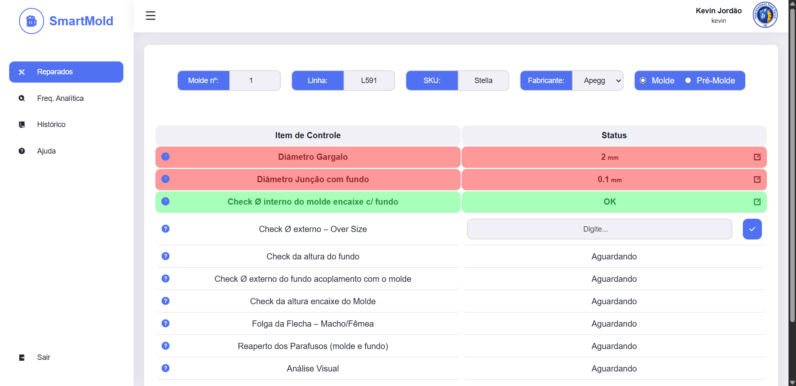

SMART MOLD
Plataforma digital para PTP de moldes que substitui formulários em papel
e sistemas terceiros, oferecendo interface web e mobile para maior
eficiência operacional e autonomia no armazenamento de dados.
Tecnologias Utilizadas
Fast API
Grafana
Docker
SQL Server
HTML
CSS
JS
Informações do Projeto
O sistema desenvolvido realiza coleta de dados em tempo real de sensores industriais, processando as informações via Python e armazenando em banco de dados SQL.
Utilizando Docker para containerização e Grafana para visualização, o projeto oferece painéis dinâmicos e alertas de performance.
O foco principal foi criar uma solução escalável e de fácil manutenção, com segurança reforçada e automação dos processos de coleta e análise.
Contexto e Problemas Anteriores
Anteriormente, a equipe de moldes realizava as medições manualmente, anotando em papel e, ao final do dia, lançando os dados em uma plataforma terceira para armazenamento.
Esse processo apresentava falhas críticas: ocorria perda de papéis com frequência, e houve casos em que a plataforma externa perdeu dados devido a sobrecargas do sistema.
Solução Desenvolvida
Para resolver essas dores operacionais, desenvolvemos uma plataforma personalizada com as seguintes funcionalidades:
- Banco de dados redundante (cada lançamento é armazenado em dois bancos de dados em servidores diferentes)
- Backup automático de dados
- Controle de acesso por login e senha
- Área exclusiva para modificações do PTP com login específico para a equipe de qualidade
- Área para comentários quando houver parâmetros fora do PTP
- Sistema de confirmação de valores
- Área para verificação de histórico
- Módulo para verificação de frequência analítica
Investimento e Equipe
O projeto exigiu a aquisição de um servidor adicional PowerEdge R260 no valor de R$ 13.669,84 para garantir a redundância do banco de dados, considerando a criticidade dessas informações para nossos processos.
Este foi um projeto conjunto desenvolvido em parceria com o técnico Kevin Jordão, que atualmente é o responsável pela manutenção do sistema.